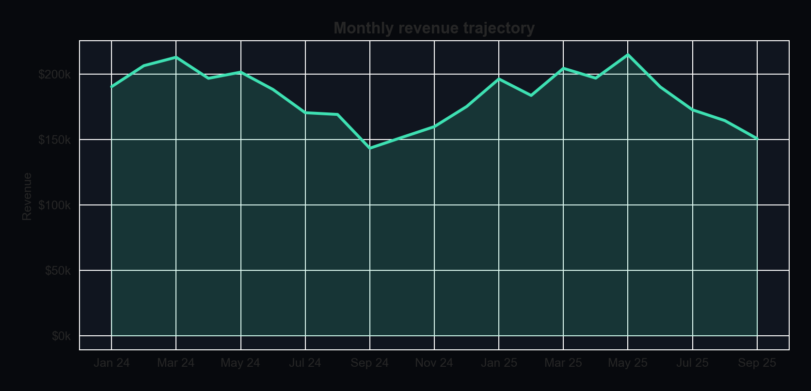
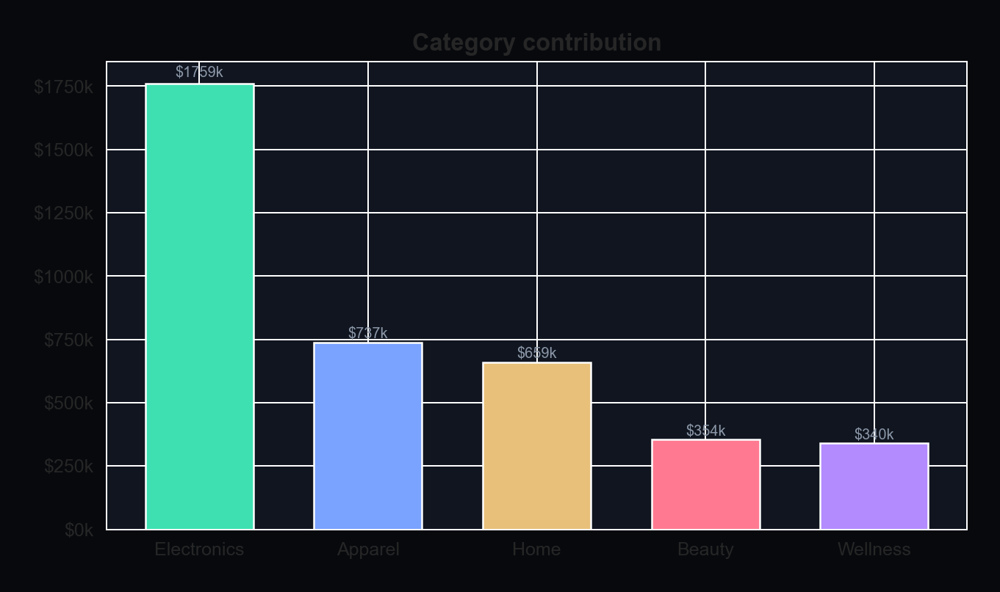
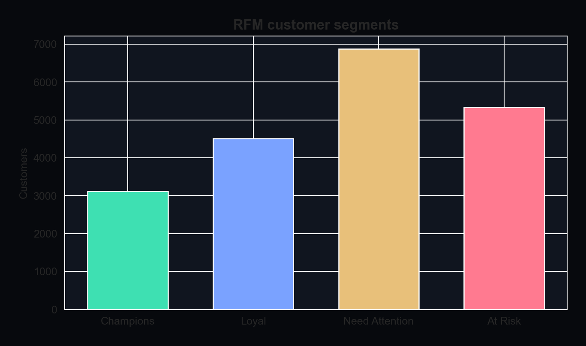
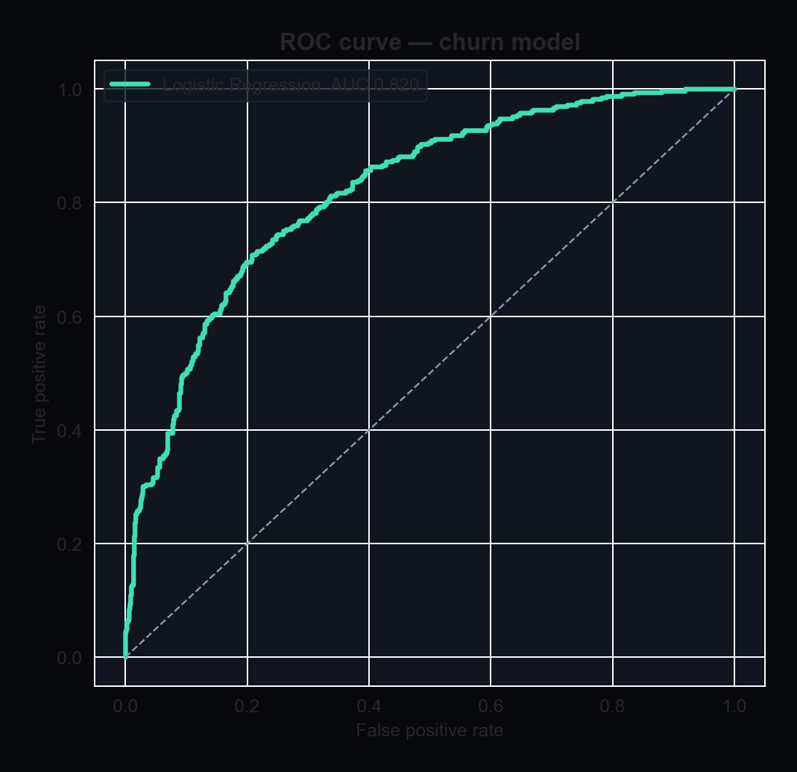
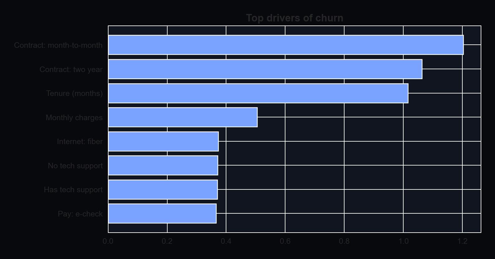
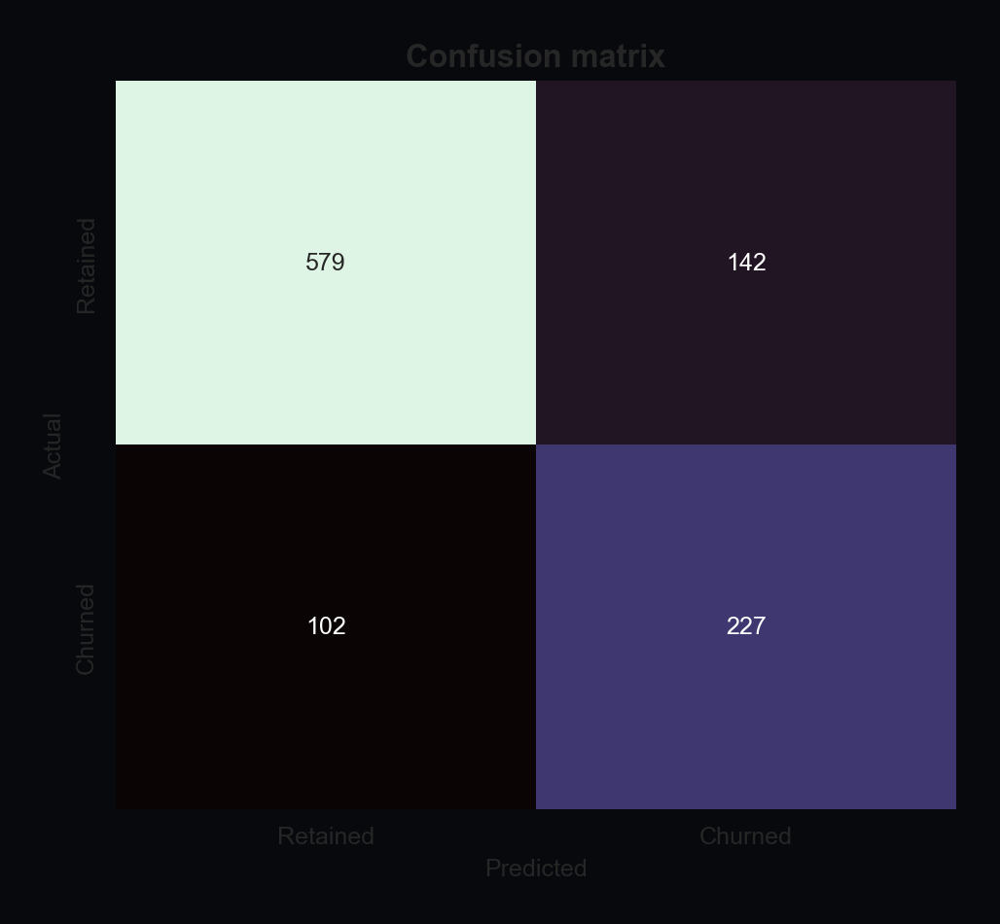

Python export · Data Analyst + Data Scientist
Portfolio case-study report
Retail Revenue Intelligence
Revenue$3.85M
Orders35,962
AOV$107
Repeat rate52%



- Electronics leads revenue mix and should stay the hero assortment.
- Repeat purchase rate is 52%; loyalty offers can lift mid-tier RFM segments.
- Weekend demand is structurally higher — shift paid media and staffing toward Friday-Sunday.
- At-risk customers are recoverable with win-back campaigns triggered at 45+ days of inactivity.
Customer Churn Prediction
ModelLogistic Regression
ROC-AUC0.820
Recall69%
F10.65



- Month-to-month contracts and electronic-check payers are the highest-risk cohort.
- Tenure is protective: intervention in the first 6 months yields the largest lift.
- Missing tech support plus rising ticket volume is a strong early-warning signal.
- Logistic Regression is the production candidate; the operating threshold is tuned for F1, not the default 0.50.